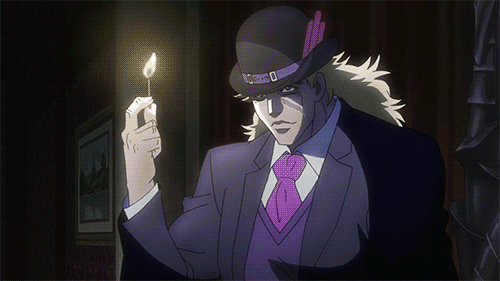
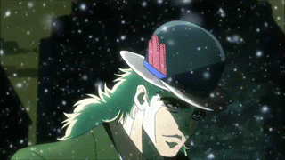
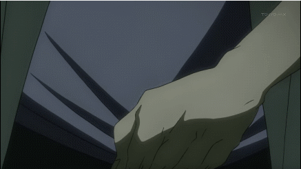
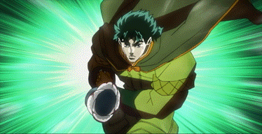
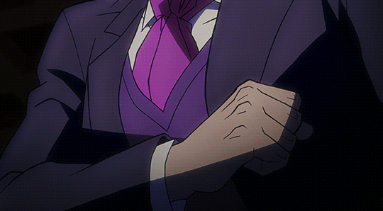
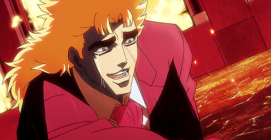
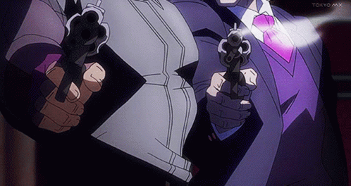
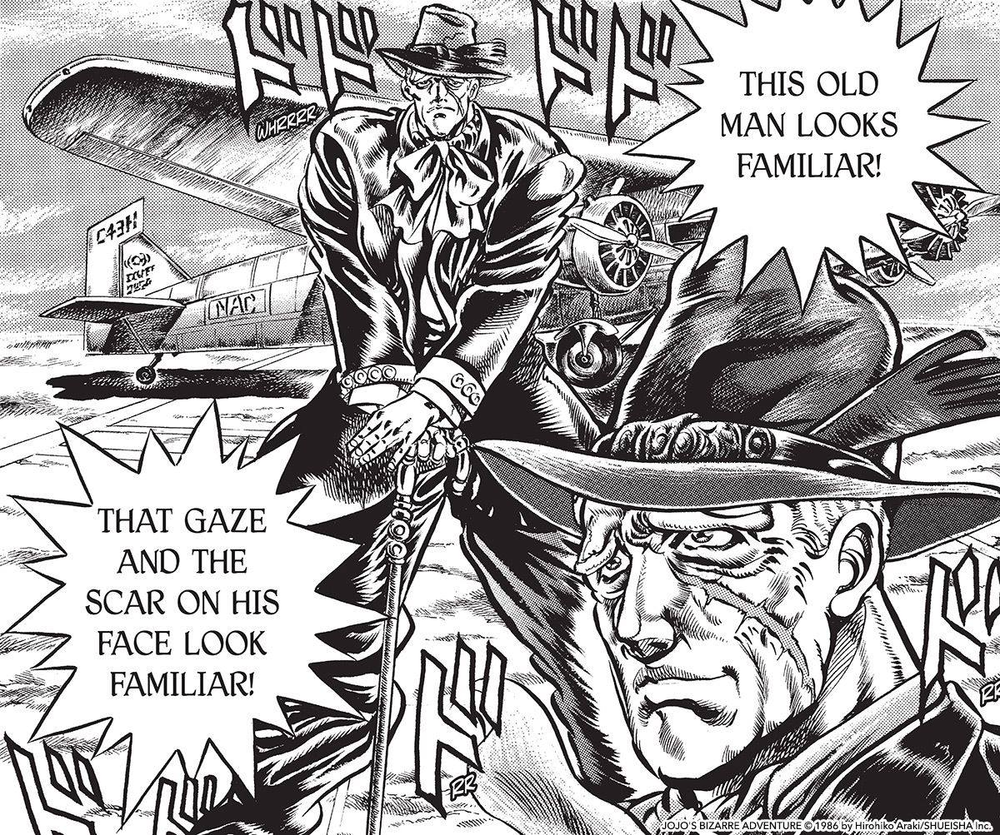

Robert E.O. Speedwagon is a main protagonist in Phantom Blood - the first part of Jojo's Bizzarre Adeventure. He is the first, and last, 'jobro' to not have any sort of power beyond that of a normal human.

He is honestly mostly used as someone to react to the Shonen Action(tm) taking place in front of him and to act as more passive support, but he is by far one of my favorite Jojo characters (and my favorite Jobro <3).
He does have a few abilities - but most of them are strange and one-off things. He is shown having a James Bond inspired razor hat, the ability to thaw frozen things with his abs (lmao) and is also shown wielding a hammer and being able to fight of Dio's Zombies fairly well for someone with no extra ability. He is also shown to be skilled with a gun and due to his criminal background is very good at reading people and their intentions.
 
Speedwagon is another character we never learn too much about - we know previously to Phantom Blood he was surviving as a criminal on Ogre Street "the most dangerous street in London". When he meets Jonahthan Joestar during a street brawl he admires his honor for sparing him and his friends and joins him back to his mansion to ensure his saftey while confronting Dio. After this he becomes extremely loyal to Jonathan and follows him through the extremely dangerous journey to defeat the now vampiric Dio despite having no Hamon or powers to protect himself.
 
Speedwagon is very very fond of Jonathan. While nowhere near as overt or developed as some other Jojo "ships" I personally think Speedwagon walked so modern lgbt Jojo characters could run. This is even hinted at by voice actors - William Zepelli's voice actor compared the two to the main character couple of a BL manga he had read. There are also a lot of moments where we see them as being extrememly close - we even get to see Speedwagon become jealous over Erina tending to Jonathan's wounds instead of him. Speedwagon is known to be Jonathan's main confidant - canonically knowing more about Jonathan than Erina. This is also evident in his willingness to stay to not only raise Jonathan's son alongside Erina, but also Joseph Joestar - Jonathan's grandson who's father passed away when he was very young. Speedwagon's comitment to Jonathan and his family is integeral to the success of future parts - mainly Part 3 and Part 6 where a lot of situations would be hopeless if not for the Speedwagon Foundation.
Personally I am a poly Jonathan/Erina/Speedwagon truther, but you can't go wrong with Jonawagon. It is THE OG Jojo/Jobro ship.
 
In Part 2 it is shown that after Jonathan's death Speedwagon stays with Erina to support her along with her and Jonathan's baby. Between Part 1 and 2 he struck it rich in the Oil business and became a successful tycoon. He used this money to found the Speedwagon Foundation - a biochemical and medical research foundation that also helps fund research into the supernatural (such as the Pillar Men in Part 2, the Stone Mask, and Stands) and aids/funds the Joestar family in their (bizarre) adventures for generations.

backgrounds by muchomago